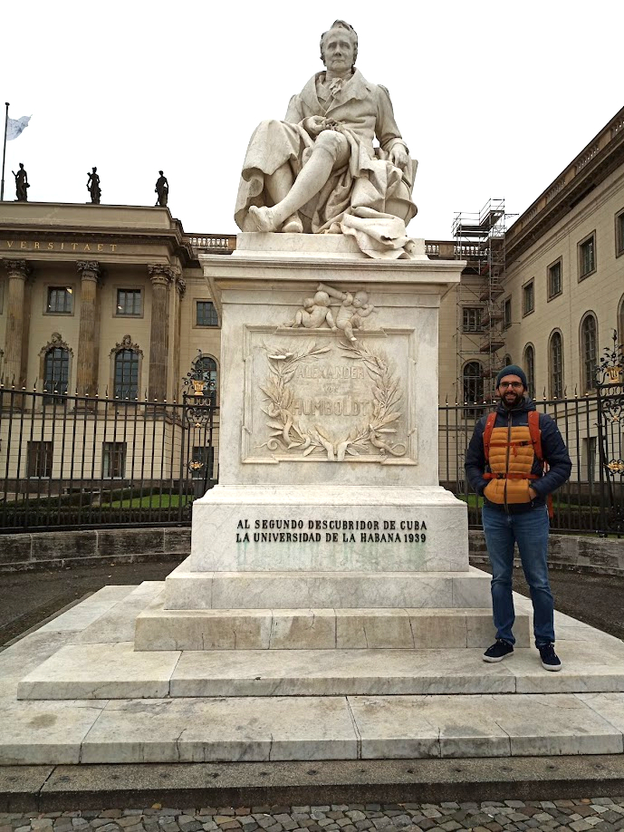

About Me
Theoretical ecologist with a passion for math and computing
I am a biologist with a passion for theoretical ecology and animal movement. I have experience in many different fields of biology, from muscle physiology to macroecology and biogeography. Currently a PostDoctoral research at iDiv. I live inside the Tower of Babel: I am Italian, my wife is Bulgarian, we met in Denmark, and we live in Germany. I am an avid reader of ancient history and I love sumo.

Me in front of Dionisio's ear.
